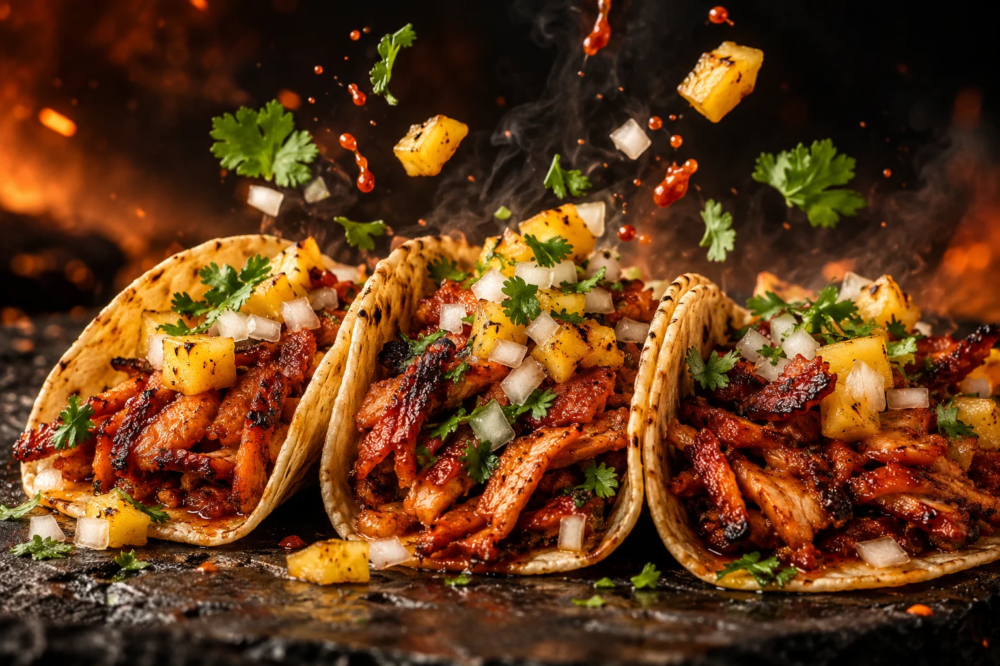

✳ BUENOS TACOS. BUENOS COMPAITOS.
UN ANTOJO
DE MIEDO.
Pastor, queso y ese primer bocado que lo dice todo. Aquí se viene con hambre. Y con los compas.
HECHO
PARA
ANTOJAR
PARA
ANTOJAR
Tres sucursales.
Un mismo buen sabor.
PASTOR DEL BUENO

ORDEN DE PASTOR$80ASÍ SÍ SE ANTOJA
Imagen publicitaria ilustrativaPASTOR ✳ ÁRABES ✳ GRINGAS ✳ ESPECIALIDADES ✳ TAQUIZAS ✳ PASTOR ✳ ÁRABES ✳ GRINGAS ✳
PARA EMPEZAR CON TODO
Elige tu antojo.
TÚ PONES LA FIESTA
NOSOTROS
LOS TACOS.
LOS TACOS.
TAQUIZAS A DOMICILIO · LOS COMPAITOS
QUE NADIE SE QUEDE CON EL ANTOJO
Tu evento.
Más sabroso.
Cumpleaños, reuniones o porque sí. Cuéntanos qué estás preparando y cotizamos tu taquiza por WhatsApp.
SIEMPRE HAY UN COMPA CERCA
Nos vemos aquí.
Tres puntos para encontrarnos.
Elige el que te quede más cerca.